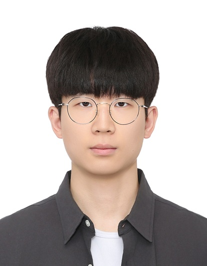

한우혁
Han WooHyeok
안정적으로 운영되는 시스템에 관심이 많은 컴퓨터공학 전공생입니다. CTF 대회 플랫폼 개발과 문제 출제·서버 운영, AI 에이전트의 자원 관리·격리 환경 개선을 거치며 시스템을 개발하고 검증·운영하는 경험을 쌓았습니다. 공개된 구현도 그대로 신뢰하지 않고 직접 검증하며, 신뢰할 수 있는 시스템을 만드는 개발자를 목표로 합니다.

System
Linux cgroup/namespace 기반 격리 실행 환경 구축, CTF 대회 플랫폼 및 문제 서버 개발/운영
Research & Analysis
지능형 시스템 보안 연구실 학부연구생, 공개 공격 구현의 결함 검증 및 압축 부채널 공격 성능 평가
Service & Solution
해커톤 최우수상 수상 서비스 기획/개발, Win32 API 기반 Windows 보안 솔루션 개발
Projects
CTF 문제 출제·검수 GitHub ↗
›
동아리 주최 CTF 리버싱·MISC 문제 출제 및 AWS 기반 문제 서버 구축·운영.
출제 및 운영
- HID (REV): BadUSB 키 입력 기록 복원, implant C2 인증 재구현으로 이어지는 2단계 문제 설계
- 언인텐 차단 설계: 플래그 서버 단독 보관, sinkhole C2를 통한 동적 분석 우회 차단, 디코이 데이터 삽입
- SISYPUSH (REV): 게임 바이너리 기반 숨은 조건·검증 루틴 복원 문제 출제
- Welcom_rev, MSG_BEET_REV_GUYS (REV), Bigstory! (MISC) 출제
- 문제 서버 구축·운영: AWS EC2 기반 Docker 문제 서버 배포(타 출제 문제 포함), non-root 실행·컨테이너 자원 제한, 플래그 런타임 주입
검증
- 레퍼런스 solver 기반 의도 풀이 전 과정 검증
MSG CTF 2025 대회 웹 플랫폼 GitHub ↗
›
명지대학교·건국대학교 글로컬캠퍼스·순천향대학교·상명대학교 천안캠퍼스·중앙대학교 연합 CTF. 자체 개발 대회 플랫폼의 프론트엔드 개발 및 대회 운영.
대회 개요
- 2025.11.09 개최
참여 형태
- 프론트엔드 (UI/UX) 담당
담당 역할
- 대회 타이머 구현: 서버 시간 기준 시작 전·종료 후 문제 접근 차단
- 점수 그래프·스코어보드 UI 개발
- 랭킹·로그인·마이페이지 UI 개발, 아이콘·로고 SVG 전환을 통한 로딩 속도 개선
NYPC 2026 중간 평가 분석 자동화
›
턴제 전략 게임 봇 대회. 15분 주기 공식 중간 평가 로그를 수집·분석해 디스코드로 알리는 에이전트 구축.
담당 역할
- 분석 에이전트 구축: 중간 평가 로그 자동 수집·분석, 디스코드 알림까지 단일 흐름으로 자동화
- 로그에서 팀 봇 취약점·상대 팀 전략 특징 추출, 다음 주기 전략 수정·대응 방향 결정 근거로 활용
- 로컬 벤치마크가 아닌 공식 평가 로그 기준 반복 개선 흐름 자동화
CTF 풀이 AI 에이전트 운영·개선
›
오픈소스 CTF 풀이 에이전트(sane100400/Machine) 포크 기반, 장시간 무인 실행 시 발생하는 운영 문제 개선.
담당 역할
- 자원 관리: cgroup 메모리 제한, 진행 상황 기반 타임아웃 자동 연장
- 실패 반복 방지: 시도 간 기억 파일 유지, 원본 승인 판정 버그 수정
- 격리·도구: mount namespace 샌드박스 구성, Ghidra 연동
성과
- 정답키 보유 벤치마크 전 문제 플래그 일치
- 크립토 공격 방향 분류 Top-1 정확도 90%
BadUSB 탐지: 캡스톤 디자인 GitHub ↗
›
USB 장치 입력 키의 명령 복원 및 위험도 산정, 위험 장치 차단 Windows 보안 솔루션.
참여 형태
- 4인 팀 PM: 역할 분배·일정 조율, 주간 회의 주도, 보고서 작성 및 최종 발표
담당 역할
- 명령어 탐지: PowerShell·CMD 명령 위협 매핑 DB(MatchingDB) 구축, 탐지 알고리즘 구현
- 점수 산출: 명령 실행 의미 기반 위협 점수식 설계, 복합 위험도 산정 모듈 구현
- 장치 인식: HID 장치 스캔, VID/PID 기반 장치 fingerprint 생성
- 장치 통제: 미등록 장치 승인 흐름, 블랙리스트 장치 비활성화, 안티 디버깅 구현
- 진입 화면 UI 수정, 논문(점수 체계·평가 파트) 집필
성과
- 내부 데이터셋 F1 0.99 (문자열 기반 탐지 0.71 - 0.98)
- 튜닝 미사용 외부 공개 페이로드 탐지율 91.7%
- 키워드 없는 LOLBin 명령 재현율 0.93 (문자열 기반 탐지 0.00 - 0.02)
- 캡스톤 디자인 은상 · CISC-W 2026 제1저자
DBReach 사이드채널 연구
›
데이터베이스 시스템에 대한 압축 부채널 공격 최적화 및 방어기술 개발. 논문 char-by-char 성능평가 파트 담당.
담당 역할
- 논문 char-by-char 성능평가 파트 실험 및 집필: DBREACH·G-DBREACH·제안기법 비교
- 최신 버전(MariaDB 12.2.2 · Ubuntu 24.04) 환경 구축·공격 코드 이식
- G-DBREACH 이진탐색 구현 결함 발견: 경계값 덮어쓰기, 반복 조기 종료, 측정 오염
성과
- G-DBREACH 재현 결함 수정 후 원논문 성능 수치 동일 재현, 이를 기준선으로 제안기법의 쿼리 효율 개선을 실험으로 입증
alphateam-mcp 성능 평가
›
Kali·SBOM·Perplexity MCP 결합 기반 웹 CTF 의존성 취약점 자동 풀이 플랫폼(Alpha-MCP) 개발.
참여 형태
- 분석팀: 평가 문제 선정, 플랫폼·비교군 테스트 직접 수행 및 결과 정리
평가 설계
- 평가 데이터셋 구성: Dreamhack·공개 CTF 웹 문제 중 Node.js 의존성 CVE 문제 중심 선정
- 지표: 사람 개입 없는 플래그 획득 여부, 비교군: Kali MCP 단독·일반 LLM(Human-in-the-loop)
- 실패 문제 중심 재테스트: 프롬프트 수정 후 실패 문제 재분석, 기존 성공 문제 회귀 확인
- 선행 도구 검증: PentestGPT의 쿠키·헤더 정보 직접 확인 불가 한계 확인
결과
- 의존성 취약점 CTF 20문제 테스트에서 Alpha-MCP 문제 해결률 66.67%, 비교군 Kali-MCP 5%·LLM(Claude) 0%
- 실패 원인 분석: 다단계 체이닝 문제 취약, 최적 공격 경로 선택 실패·비표준 플래그 형식 할루시네이션 등 프롬프트 개선 근거 제공
Deep Think: AI 뉴스 비판적 읽기 서비스 GitHub ↗
›
기사 문장의 명확/모호 분류 및 모호 문장에 대한 대안 해석·외부 근거 제시 AI 뉴스 읽기 서비스.
담당 역할
- 서비스 기획: 문장 분류·요약·근거 제시 흐름 설계
- 구조 설계: React 웹 · Django API(GPT·Perplexity) · Chrome 확장
- UI/UX 디자인 (Figma)
링크
성과
- Asia Impact Hackathon 2025 최우수상 (KAPS Award): 한국정책학회 · 연세대학교
Colloportus: 선박 위성통신 보안 서비스 GitHub ↗
›
선박 VSAT 네트워크 트래픽·주파수 AI 분석 기반 이상 트래픽 및 전파 방해(Jamming) 탐지·대시보드 서비스.
담당 역할
- Django API 구성: 트래픽·Jamming 탐지 결과, 경고, 대응 처리
- AI 탐지 결과 정상/비정상 분류 저장(MongoDB) 및 대시보드 연동
- 비정상 IP 허용·차단 처리 흐름 구현
성과
- 사이버시큐리티 해커톤 지정 부문 최우수상 (과학기술정보통신부 외)
승철도: 지하철 경로 안내 앱 GitHub ↗
›
최단 시간·최단 거리·최소 비용 경로 안내 지하철 애플리케이션 및 센서 기반 역 내부 길찾기 서비스.
참여 형태
- 4인 팀 PM: 역할 분배·일정 조율, 최종 발표 및 시연
담당 역할
- 서비스 구조 기획
- 역 내부 길찾기 구현: 가속도·자이로 센서 기반 걸음 감지, 칼만 필터 보정, 역 지도 위 이동 경로 표시
Awards
- 2026.10.05Black Hat MEA CTF 2026 본선 진출팀 Good luck have fun
- 2026.08.29NYPC 2026 Master Track Bronze (넥슨재단 이사장상)넥슨 · NYPC
- 2026.06.08캡스톤 디자인 은상명지대학교
- 2025.05.30MJSEC BOJ Contest 2위MJSEC
- 2025.05.09Asia Impact Hackathon 2025 최우수상 (KAPS Award)한국정책학회 · 연세대학교
- 2025.04.25화이트햇스쿨 3기 반대항전 우승KITRI
- 2024.09.12사이버시큐리티 해커톤 지정 부문 최우수상과학기술정보통신부 외
Publications
- 2026.10.29HID 위장 장치의 키 입력 복원 및 실행 의미 분석을 통한 BadUSB 탐지 기법 PDF ↗한국정보보호학회 CISC-W 2026 논문집 Vol.36 No.2 pp.733-736 · 구두발표 · 제1저자
한우혁, 곽나영, 정지윤, 정유찬, 현상원
Activities & Education
- 2021.02 - 2027.02명지대학교 컴퓨터공학 학사졸업 예정 · 학점 4.11 / 4.5
- 2025.11 - 2026.05INCOGNITO 2026 운영진대학생 정보보호 컨퍼런스 · 프로젝트 운영
- 2025.07 - 2025.08사이버안보 아카데미국가정보원
- 2025.03 - 2025.09화이트햇스쿨 3기한국정보기술연구원(KITRI) · 프로젝트 alphateam-mcp
- 2024.12 - 현재지능형 시스템 보안 연구실 학부연구생명지대학교 · 데이터베이스 압축 부채널 공격 최적화 및 방어 기술 연구
- 2024.09 - 현재MJSEC명지대학교 정보보안 동아리 · 학습부장 (2025.09 - 2026.06) · 웹해킹 멘토 · 리버싱 멘토 · MSG CTF 개발 운영진·출제
Skills
Language
Frontend & App
Backend & Data
System
Infra & Tools
Security
Certifications
- 2025.06SQLD한국데이터산업진흥원